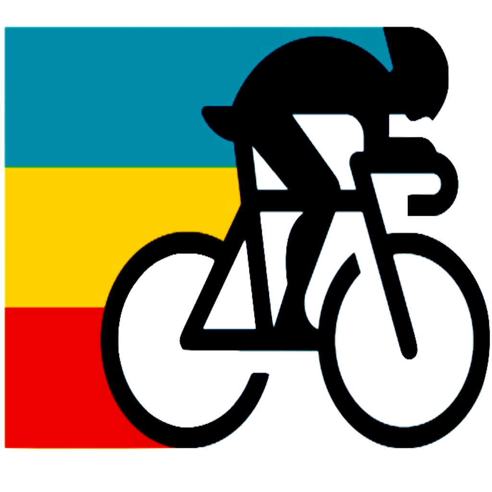

<ion-header [translucent]="false">
  <ion-toolbar color="primary">
    
  </ion-toolbar>
</ion-header>

<ion-content [fullscreen]="true">
  <div class="user-img">
    
  </div>
  <div class="user-img-profile">
    <div style="position: relative;">
      
    </div>
  </div>
  <div class="user-header-content">
    <h1>
      {{user.userName}}, {{user.userAge}}
    </h1>
    <h2>
      {{user.userHistory}}
    </h2>
  </div>
  <div class="user-social-media-data">
    <ion-grid>
      <ion-row class="ion-align-items-center">
        <ion-col>
          <label>
            Followers
          </label>
          <div>
            {{user.userFollowers}}
          </div>
        </ion-col>
        <ion-col style="border-left: 2px solid white">
          <label>
            Following
          </label>
          <div>
            {{user.userFollowing}}
          </div>
        </ion-col>
        <ion-col style="border-left: 2px solid white">
          <label>
            Medallas
          </label>
          <div>
            {{user.userAchieves}}
          </div>
        </ion-col>
      </ion-row>
    </ion-grid>
  </div>


  <ion-segment mode="ios" (ionChange)="segmentChanged($event)" [(ngModel)]="segmentSport">
    <ion-segment-button value="Cyclism" id="cyclismButtonSegment">
      <ion-label>Cyclism</ion-label>
    </ion-segment-button>
    <ion-segment-button value="Running">
      <ion-label>Running</ion-label>
    </ion-segment-button>
  </ion-segment>

  <div class="user-staticstics-info">
    <canvas #radarStatistics style="position: relative; height:20vh; width:40vw"></canvas>
  </div>
</ion-content>